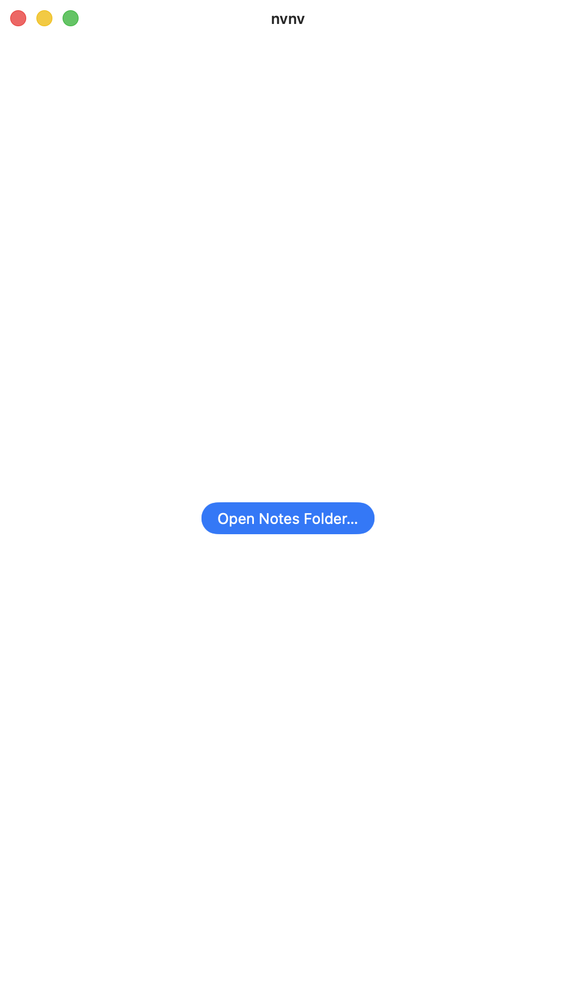
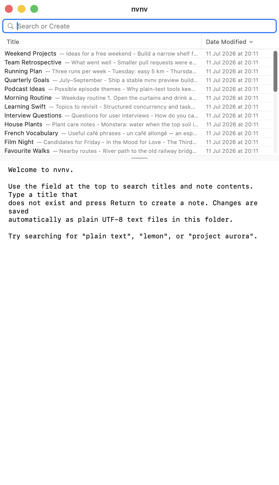
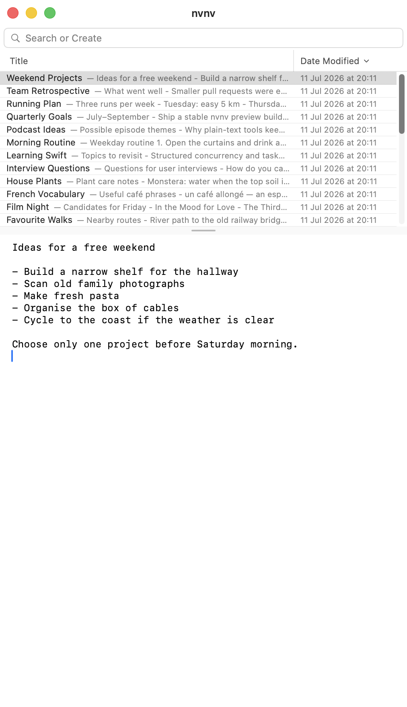
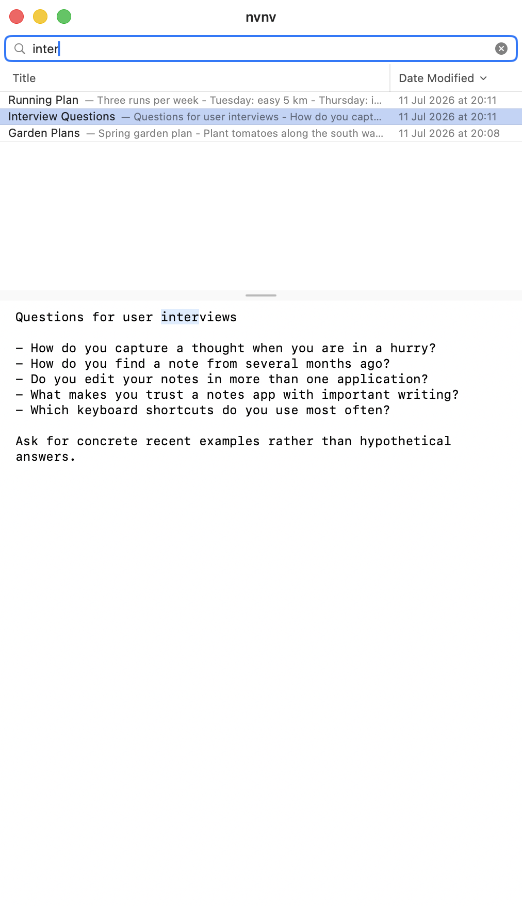
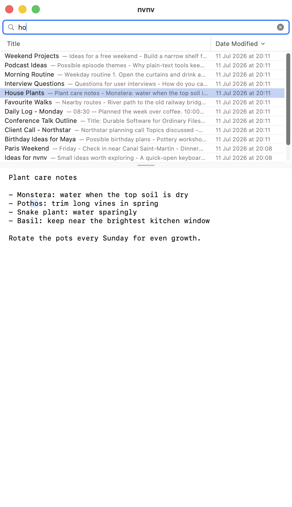
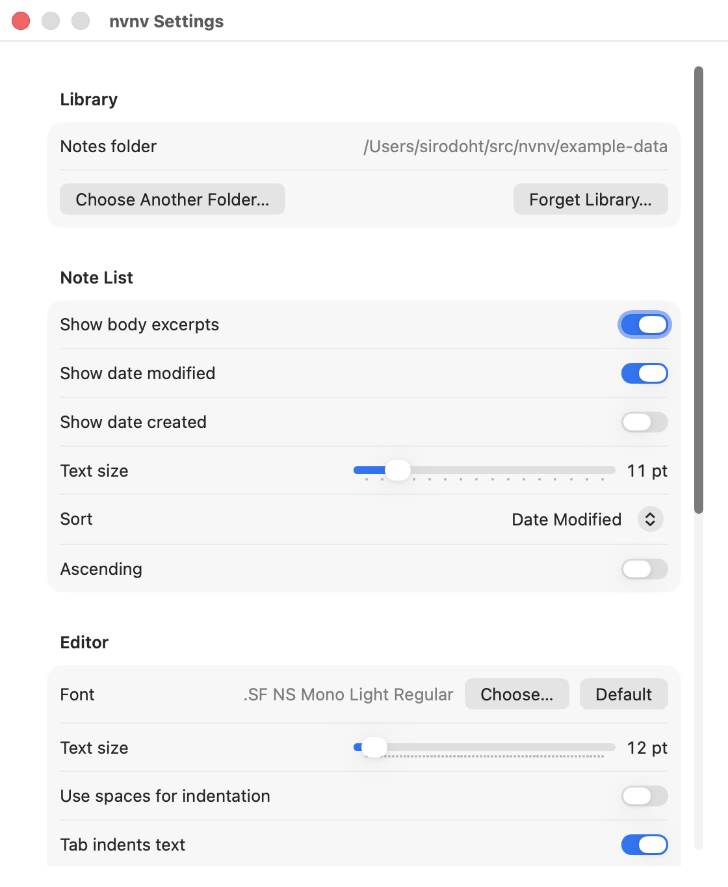
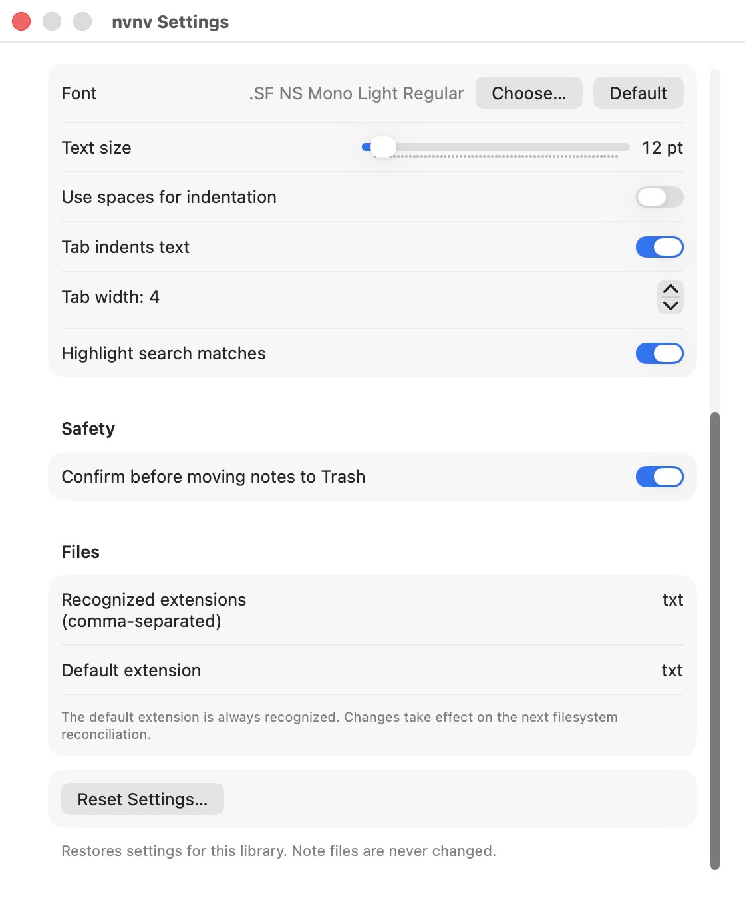

Type anything
One field searches every title and body as quickly as you can think.
mushroom
risotto
It is an attempt to loosen the mental blockages to recording information and to scrape away the tartar of convention that handicaps its retrieval. The solution is by nature nonconformist.
プログラムの使用
nvnv keeps search, creation, and writing in one continuous motion. No folders to tend. No save button to remember. No tiny database holding your thoughts hostage.
⌘L → type → found
One field searches every title and body as quickly as you can think.
Jump to a match. No match? Press Return and the query becomes a new note.
Write in plain text. nvnv saves automatically, quietly, and safely.
One window. Search at the top, notes just below it, and the selected thought underneath.







Four principles.
nvnv's window was designed for keyboard input above all else, and thus has no buttons.
There is no manual “saving” in nvnv; all modifications take effect immediately.
Searching for notes is not a separate action; rather, it is the primary interface.
Search, navigate, rename, move, and edit without leaving the keyboard.
03
Release-mode engine benchmarks on 10,000 notes with varied, 2,048-byte bodies.
| Benchmark / workload | Result |
|---|---|
| Search | |
| Broad cached search 10,000 notes · all match | 13 ms |
| Selective FTS search 10,000 notes · one match | 1.8 ms |
| Missing-term search 10,000 notes · no matches | 12 ms |
| Missing-term load test 50,000 notes · no matches | 63 ms |
| Filesystem | |
| Initial library scan 10,000 note files | 2.23 s |
| Warm metadata scan 10,000 unchanged files | 438 ms |
| Incremental external scan One changed file of 10,000 | 16 ms |
| Indexing | |
| Prepare search documents 10,000 notes × 2 KB | 345 ms |
| Update SQLite + FTS One changed note | 12.5 ms |
Steady-state results are seven-run medians. Core measurements only; UI and launch timings are not included.
Methodology ↗04
nvnv watches your files, plays nicely with external edits, and keeps its index disposable. Your notes outlive the app. Zero vendor lock-in.
Speak to your agent about it. Reimplement with your changes.
nvnv SPEC05
MIT License. Permission is hereby granted. This software is provided as is. Use your agent.
github.com/sirodoht/nvnv06
nvnv exists because Notational Velocity nailed the UX. Thanks Zachary!